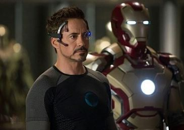

INTRODUCTION
|  | TONY STARK천재적인 두뇌와 재능으로 세계 최강의 무기업체를 이끄는 CEO이자, 타고난 매력으로 셀러브리티 못지않은 화려한 삶을 살아가던 억만장자 토니 스타크. 그는 납치를 당하고 Mark1을 만들어 탈출한다. |
JARVIS자비스는 스타크를 돕는 인공지능 컴퓨터이다. |


{kind=link}
{kind=link}
MOVIES
줄거리
하이테크 슈퍼 히어로의 탄생 | 이제 업그레이드는 끝났다
천재적인 두뇌와 재능으로 세계 최강의 무기업체를 이끄는 CEO이자, 타고난 매력으로 셀러브리티 못지않은 화려한 삶을 살아가던 억만장자 토니 스타크. 아프가니스탄에서 자신이 개발한 신무기 발표를 성공리에 마치고 돌아가던 그는 게릴라군의 갑작스런 공격에 의해 가슴에 치명적인 부상을 입고 게릴라군에게 납치된다. 가까스로 목숨을 건진 그에게 게릴라군은 자신들을 위한 강력한 무기를 개발하라며 그를 위협한다. 그러나 그는 게릴라군을 위한 무기 대신, 탈출을 위한 무기가 장착된 철갑수트를 몰래 만드는 데 성공하고, 그의 첫 수트인 ‘Mark1’를 입고 탈출에 성공한다.
미국으로 돌아온 토니 스타크는 자신이 만든 무기가 많은 사람들의 생명을 위협하고, 세상을 엄청난 위험에 몰아넣고 있다는 사실을 깨닫고 무기사업에서 손 뗄 것을 선언한다. 그리고, Mark1을 토대로 최강의 하이테크 수트를 개발하는 데 자신의 천재적인 재능과 노력을 쏟아 붓기 시작한다. 탈출하는 당시 부서져버린 Mark1를 바탕으로 보다 업그레이드 된 수트 Mark2를 만들어낸 토니 스타크. 거기에 만족하지 않고, 숱한 시행착오와 실패 끝에 자신의 모든 능력과 현실에서 가능한 최강의 최첨단 과학 기술이 집적된 하이테크 수트 Mark3를 마침내 완성, 최강의 슈퍼히어로 ‘아이언맨’으로 거듭난다.
토니 스타크가 탈출하는 과정을 통해 Mark1의 가공할 위력을 확인한 게릴라 군은 토니 스타크가 미처 회수하지 못한 Mark1의 잔해와 설계도를 찾아낸다. Mark1을 재조립하여 그들의 목적을 이루기 위한 거대하고 강력한 철갑수트를 제작하려는 음모를 꾸미는 게릴라군. 토니 스타크가 갖고 있던 에너지원을 훔쳐 ‘아이언맨’을 능가하는 거대하고 강력한 ‘아이언 몽거’를 완성한 그들은 세계 평화를 위협하고, 토니 스타크는 그들의 음모과 배후세력이 누구인지를 알게 되는데...!
줄거리
세계 최강의 무기업체를 이끄는 CEO이자, 타고난 매력으로 셀러브리티 못지않은 화려한 삶을 살아가던 토니 스타크. 기자회견을 통해 자신이 아이언맨이라고 정체를 밝힌 이후, 정부로부터 아이언맨 수트를 국가에 귀속시키라는 압박을 받지만 이를 거부한 채 더욱 화려하고 주목 받는 나날을 보낸다. 스타크 인더스트리의 운영권까지 수석 비서였던 ‘페퍼포츠’에게 일임하고 슈퍼히어로로서의 인기를 만끽하며 지내던 토니 스타크. 하지만 그 시각, 아이언맨의 수트 기술을 ‘스타크’ 가문에 빼앗긴 후 쓸쓸히 돌아가신 아버지의 복수를 다짐해 온 ‘위플래시’는 수트의 원천 기술 개발에 성공, 치명적인 무기를 들고 직접 토니 스타크를 찾아 나선다.
F-1 모나코 그랑프리에서 직접 경주용 차에 올라선 토니 스타크 앞에 나타난 위플래시! 무차별적으로 전기 채찍을 휘두르는 그의 공격에 무방비 상태였던 토니 스타크는 생명의 위협을 느끼지만, 새롭게 개발한 휴대용 수트 Mark5를 이용하여 간신히 위험에서 벗어난다. 그리고 자신과 자신의 아버지에 대해 강한 적대감을 드러내는 그에게서 심상치 않은 위기를 직감한다. 한편, 이 과정을 모두 지켜본 토니 스타크의 라이벌이자 무기업자인 ‘저스틴 해머’는 아이언맨에 필적할 만한 위플래시의 위력을 간파하고 그를 몰래 감옥에서 탈출시켜 자신과 손 잡을 것을 제안한다.
위플래시를 만난 이후 좀처럼 충격에서 헤어나오지 못하던 토니 스타크는 감옥에 갇혀 있는 줄 알았던 위플래시가 저스틴 해머와 함께 있음을 알게 되고, 역대 수트들을 뛰어넘는 최강의 위력을 지닌 Mark6 개발에 박차를 가한다. 그 사이, 저스틴 해머는 새로운 군무기 발표 쇼케이스를 개최하고, 그 곳에서 위플래시는 모두를 놀라게 할 작전 실행에 나서는데...!
줄거리 2. 자신이 아이언맨이라고 정체를 밝힌 뒤 할리우드 스타 못지 않은 인기를 누리던 토니 스타크. 스타크 인더스트리의 운영권을 수석 비서였던 페퍼포츠에게 일임하고 즐거운 나날을 보내던 그에게 생애 최고의 위기가 찾아온다. ‘스타크’ 가문에 대한 적대감으로 가득 찬 ‘위플래시’가 아이언맨 수트의 원천 기술인 아크 원자로 개발에 성공한 것. F-1 그랑프리에 출전하여 무방비 상태에 있던 토니 스타크에게 위협적인 공격을 가하는 위플래쉬. 이에 토니 스타크는 새로 개발한 업그레이드 수트를 이용, 겨우 위기를 모면한다. 하지만 이 사건을 계기로 위플래시는 토니 스타크의 라이벌 ‘저스틴 해머’와 손을 잡고 아이언맨을 공격하기 시작하고, 이에 토니 스타크는 오랜 동료 제임스 로드를 위한 새로운 하이테크 수트를 제작, ‘워 머신’으로 거듭난 그와 함께 강력해진 적들과의 본격적 대결에 나서는데…!
줄거리
21세기 가장 매력적인 히어로의 귀환
지금까지의 아이언맨은 잊어라!
어벤져스 뉴욕 사건의 트라우마로 인해 영웅으로서의 삶에 회의를 느끼는 토니 스타크(로버트 다우니 주니어).
그가 혼란을 겪는 사이 최악의 테러리스트 만다린(벤 킹슬리)을 내세운 익스트리미스 집단 AIM이 스타크 저택에 공격을 퍼붓는다. 이 공격으로 그에게 남은 건 망가진 수트 한벌 뿐.
모든 것을 잃어버린 그는 다시 테러의 위험으로부터 세계와 사랑하는 여인(기네스 팰트로)를 지켜내야 하는 동시에 머릿속을 떠나지 않던 한가지 물음의 해답도 찾아야만 한다.
과연 그가 아이언맨인가? 수트가 아이언맨인가?